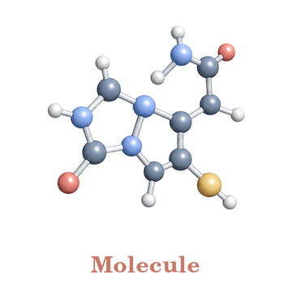
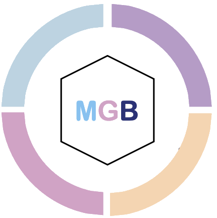
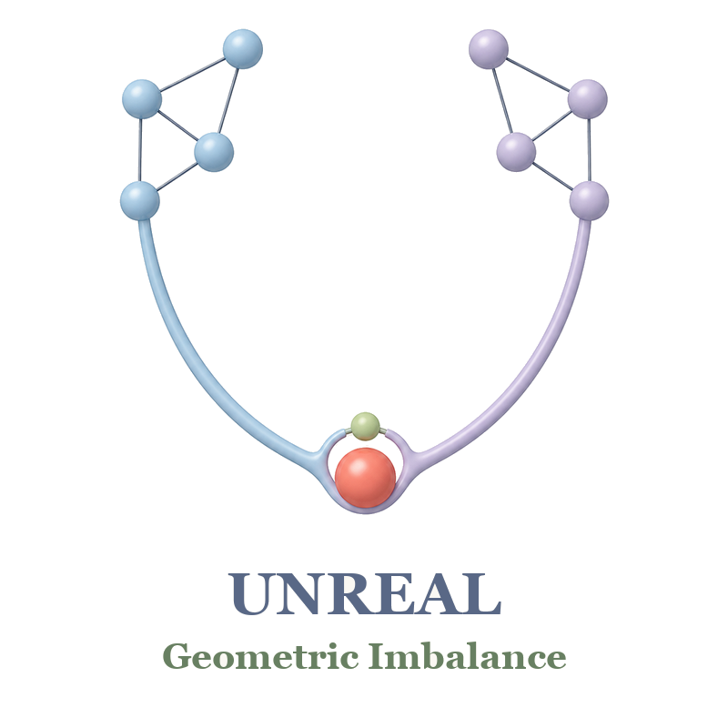
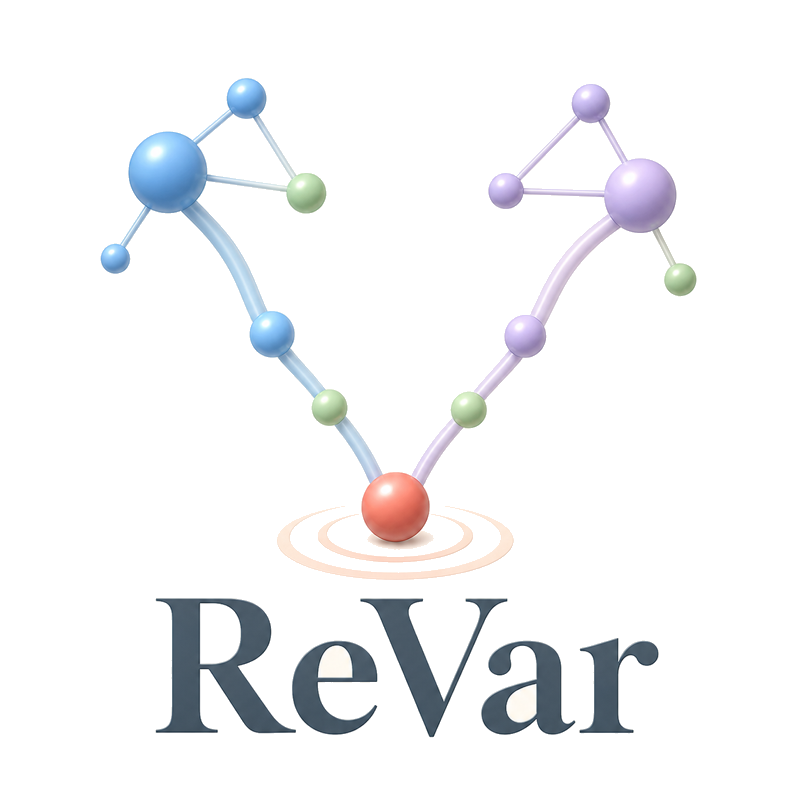
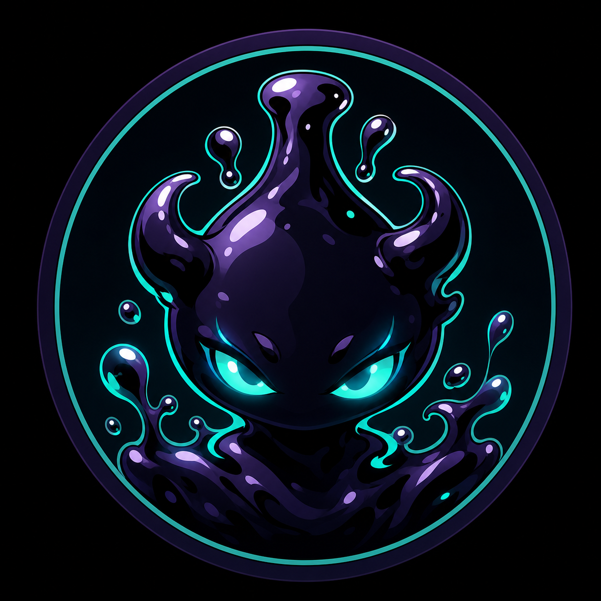
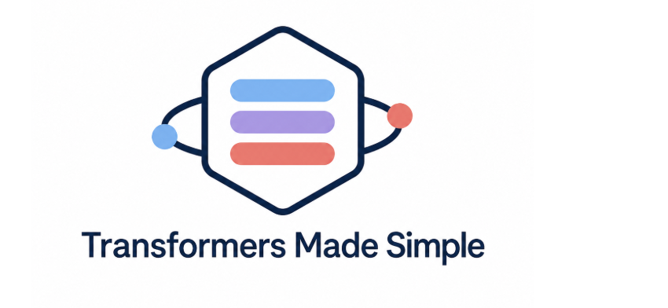
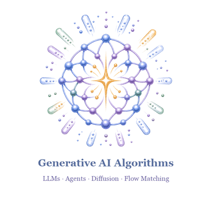
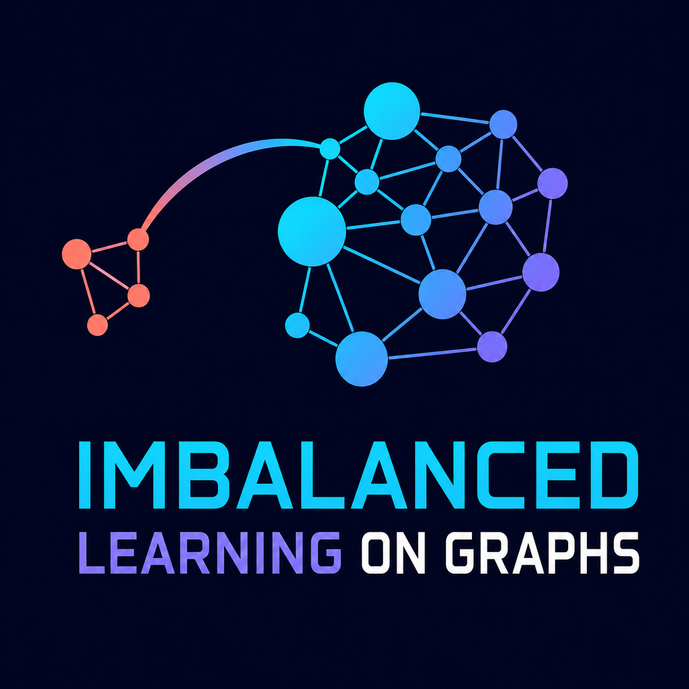

Liang (Divin) Yan
Machine Learning Researcher
Generative Models · NLP · AI for Science
Email: yanliangfdu[at]gmail.com · divinyan[at]cs.washington.edu
Google Scholar · GitHub · ORCID · X / Twitter · LinkedIn
About
- I am currently a PhD student at the Paul G. Allen School of Computer Science & Engineering, University of Washington (2026–present).
- From 2024 to 2026, I was a visiting student in the Anima AI+Science Lab at the California Institute of Technology, where I worked with Prof. Anima Anandkumar.
- I completed an M.S. in Applied Mathematics at Fudan University, under the supervision of Prof. Zengfeng Huang. My research focused on graph learning and generative models, spanning both theory and real-world applications.
- From 2023 to 2024, I was a visiting student in the Vision and Learning Lab at UC Merced, advised by Prof. Ming-Hsuan Yang and Dr. Lu Qi.
- I also completed research internships at Tencent AI Lab and Shanghai AI Lab.
Research Interests
My research investigates generative modeling from first principles, with the goal of developing simple, principled, and scalable methods for natural language processing, multimodal learning, and AI for Science. I am particularly interested in how structural, geometric, and physical priors can inform generative AI approaches like large language modeling, diffusion modeling, flow matching, and multimodal learning, improving their generalization, controllability, and scientific reliability. I am also broadly interested in mathematics, physics, astronomy, and cosmology.
News
-
NucleusDiff was reported by Caltech News! Read the story
-
MGB was accepted by NeurIPS 2025 AI4Mat Workshop! We present the first comprehensive material generation benchmark in the world, which includes LLMs, diffusion & flow-based models, and VAE-based models!
-
UNREAL was accepted by NeurIPS 2025! We first introduce the concept of geometric imbalance of GNNs on riemannian manifold!
-
NucleusDiff was accepted by PNAS 2025!
-
HuDiff was accepted by Nature Machine Intelligence 2025! Congrats Jian and Fandi!
Selected Publications
View all publications(* indicates equal contribution)

Manifold-Constrained Nucleus-Level Denoising Diffusion Model for Structure-Based Drug Design
[Project Page] [Paper] [Arxiv] [OpenReview] [Code] [Slides]
Proceedings of the National Academy of Sciences 2025 (PNAS 2025) (Featured by Caltech News)


Open Source & Community
Python Packages & Software


Transformers-Made-Simple
A beginner-friendly PyTorch codebase for learning major Transformer architecture families.
Resources & Community

Awesome-Generative-AI-for-Material-Discovery
A curated collection of generative AI algorithms and resources for materials discovery.

Awesome-MLLMs-for-Science
A curated overview of multimodal language models across four scientific discovery domains.

awesome-imbalanced-learning-on-graphs
A curated collection of surveys, papers, and code on imbalanced graph learning.
Service
-
I have served as a program committee member and reviewer for the following conferences and workshops:
- 2026: ICLR; NeurIPS; ACM MM; ACM MM Datasets Track; IJCAI–ECAI; ICML LXAI Workshop; COLM AIW Workshop.
- 2025: ICLR; ICML; NeurIPS; ACM MM; ACM MM Datasets Track; ICML LXAI Workshop; ICML AI4Math Workshop; ICML AIW Workshop; ICML DataWorld Workshop; NeurIPS LXAI Workshop; NeurIPS VLM4RWD Workshop.
- 2024: KDD; ICLR; ICML; NeurIPS.
- 2023: KDD; NeurIPS.
Personal
I originally had no connection to the field of artificial intelligence. If everything had gone as expected, I might have become a bank manager or an accountant. However, during my undergraduate years, I happened to stumble upon a book on artificial intelligence while wandering through the library. That book left a profound impact on me, and from that moment, I made up my mind to devote myself to this exciting field. This is my origin, the path I started on, and I hope I will never forget the inspiration and determination I felt at the very beginning.
I am a fan of the late NBA star Kobe Bryant. He has been a great source of inspiration for me. He once said: "If you love a thing, you will overcome all difficulties." So, the most important thing is to find something you truly love. I hope I already find mine too. RIP, Kobe.